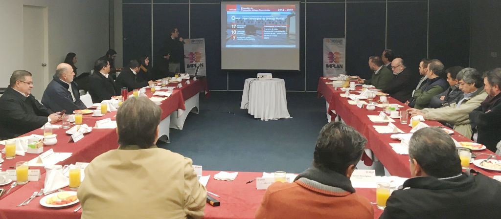
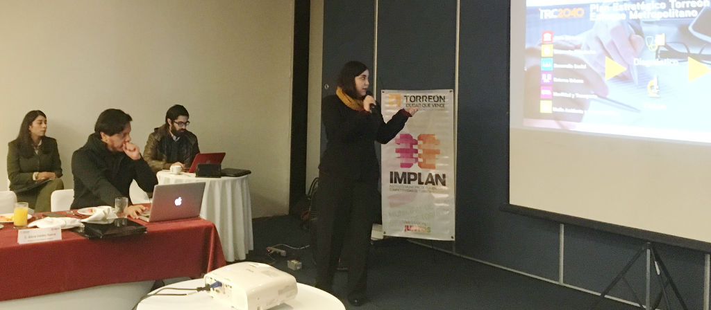

Instrucciones: Cada 12 segundos cambia la imagen. Puede arrastrar a la izquierda para avanzar y a la derecha para retroceder.
Presentación: Onceava Sesión Ordinaria
Presenta IMPLAN resultados de trabajo 2014 – 2017 en Sesión de Consejo
El Instituto Municipal de Planeación y Competitividad de Torreón se ha consolidado como un instrumento de gobernanza que ha hecho un llamado a la concertación y al acuerdo entre el gobierno y los liderazgos que representan a los diversos sectores de La Laguna, porque Torreón es una urbe integrada, en toda la extensión de la palabra, en una zona metropolitana de gran permeabilidad y movilidad social.
En la onceava sesión de Consejo Directivo, el IMPLAN presentó los resultados de trabajo realizado en el cuatrienio 2014 – 2017, asimismo se entregaron reconocimientos a los consejeros que terminaron su gestión en esta administración.
Entre los temas más destacados, se dio a conocer la consolidación de la Plataforma del Conocimiento [www.trcimplan.gob.mx](http://www.trcimplan.gob.mx/). Con más de 118,000 usuarios y más de 483,000 páginas visitadas en 4 años.
Se informó que en 2018 el Sistema Metropolitano de Indicadores contará con 40 categorías nuevas y los Indicadores Básicos de Colonia 7 categorías nuevas por colonia.
También se mencionó al esfuerzo de participación ciudadana único: la creación del Plan TRC2040, con la participación de más de 264 líderes, la generación de más de 350 proyectos, todos surgidos de la sociedad civil.
Se destacaron las consultas Aire para Todos y Vive tu Alameda, así como las consultas para la creación del Plan de Movilidad No Motorizada, el Clúster Salud y el Clúster Automotriz.
También se mencionó el Plan de Política Industrial, el Plan Estratégico de Drenaje Pluvial y los más de 70 dictámenes técnicos realizados con el fin de promover el ordenamiento urbano y asesorar al Ayuntamiento en materia de aprovechamiento en uso de suelo.
Algunos proyectos destacados en el 2017 fueron: la creación de los Indicadores Básicos de Colonia, el encuentro Laguna Y2040 realizado en conjunto con el Tecnológico de Monterrey, la presentación del Índice de Prosperidad Urbana (CPI por sus siglas en inglés) en conjunto con ONU Habitat, los convenios con la Cámara Mexicana de la Industria de la Construcción (CMIC) y con el Clúster Automotriz, entre otros.
 Numeralia del legado del IMPLAN 2014 – 2017
- Se realizaron 45 Sesiones de Consejo Directivo, todas ellas con quórum legal.
- Más de 200 análisis publicados en la plataforma, 90 de ellos en el periódico Milenio Laguna.
- Se realizaron conferencias abiertas al público en general, con personajes como los especialistas en economía Oscar Vera, Lorenzo Lazo y el urbanista Gabriel Todd.
- Se organizaron más de 40 charlas impartidas en universidades, asociaciones civiles, cámaras empresariales y colegios de profesionistas, con una asistencia de más de 800 personas.
- Más de 260 líderes participaron en las consultas para elaboración del Plan Estratégico TRC2040.
- Con más de 5,000 horas hombre de trabajo.
- Más de 350 proyectos ciudadanos surgieron del Plan TRC2040.
- 42 especialistas participaron en la conformación de la propuesta del Clúster Salud Laguna.
- 590 propuestas ciudadanas se analizaron para la propuesta del reglamento de Desarrollo Urbano, Zonificación y construcción.
- Más de 70 dictámenes técnicos de acciones urbanas fueron emitidos a través del IMPLAN.
- 35 mapas y planos componen el Sistema de Información Geográfica.
- 150 consultas diaria a la plataforma trcimplan.gob.mx.
- 8,310 datos organizados en el Sistema Metropolitano de Indicadores.
- 399 colonias se tienen registradas con los Indicadores Básicos de Colonia.